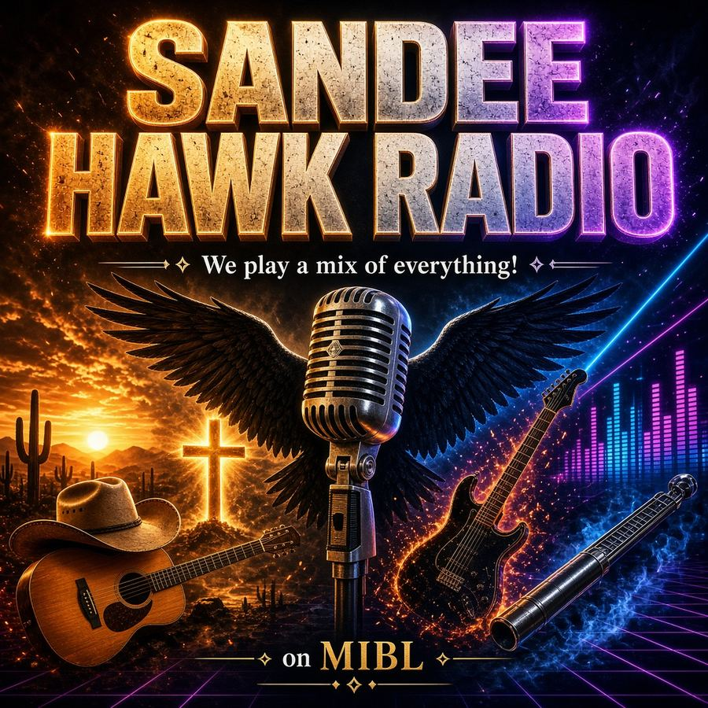
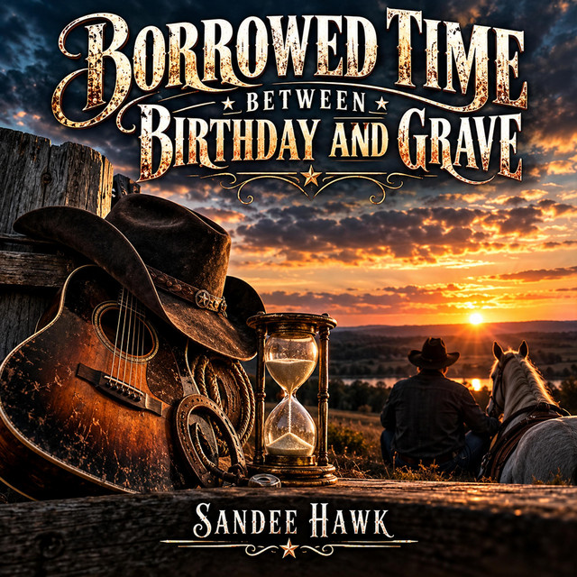
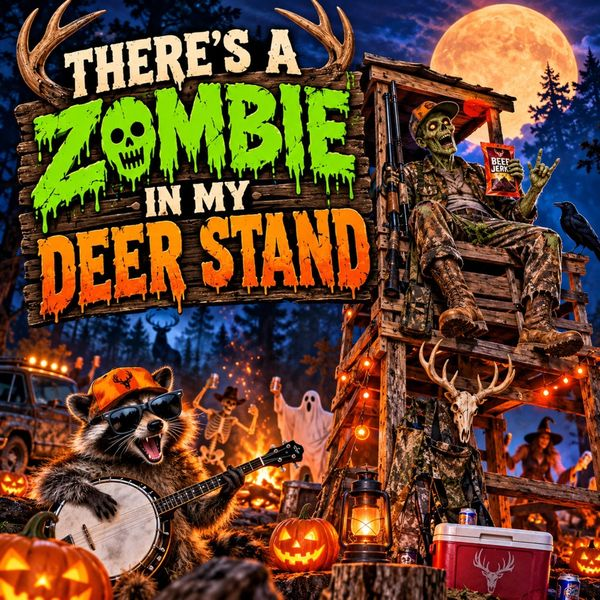
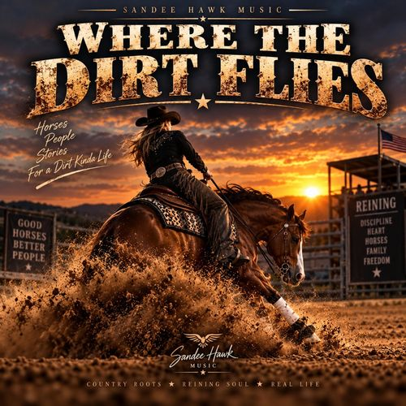
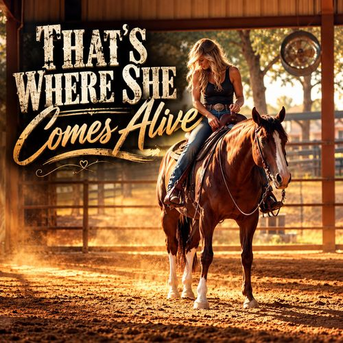
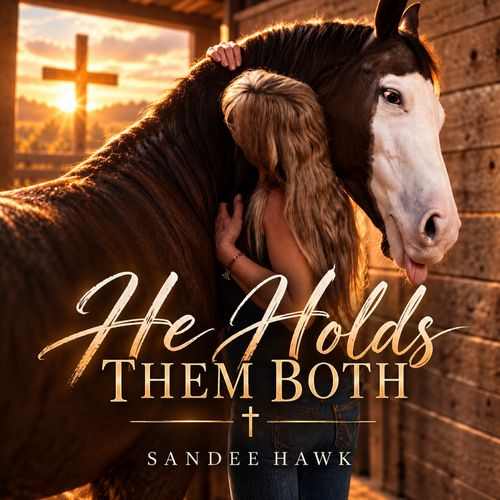
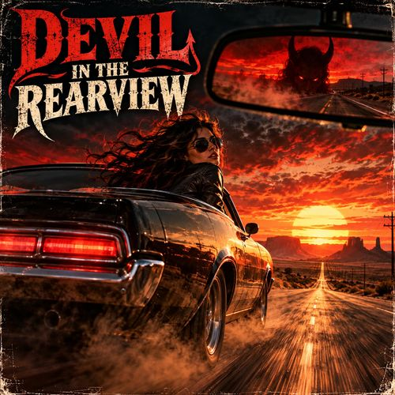
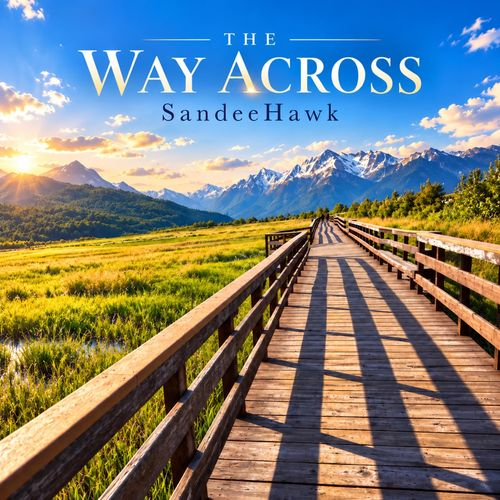
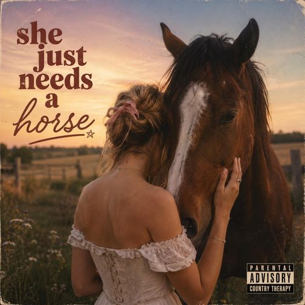
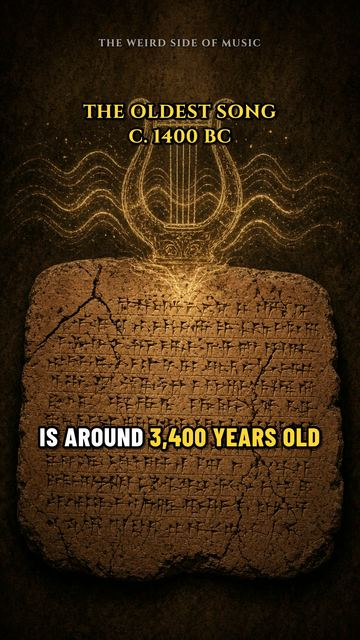

Still I Will Sing
Sandee Hawk Music · Texas
Sandee Hawk
Country songs about grit, faith, horses, and second chances.


New Single · Out Oct 25, 2026
“Borrowed Time Between Birthday and Grave”
The newest release from Sandee Hawk, out now on Spotify.

Latest · Through Halloween
Vote for “There’s a Zombie in My Deer Stand”
The Halloween hunting song is playing on Halloweenradio.net’s Cauldron station. Listeners get one vote a day, and the top songs move up to the Main or Kids station. Give it your vote every day through Halloween.
About
Sandee Hawk is the music project of Texas songwriter Dwight Martin, released under Sandee Hawk Music.
He’s an Army veteran and former medic who now works in air medical flight dispatch, and he writes country, country rock, country gospel, and worship songs about grit, faith, horses, and second chances.
Sandee Hawk is AI-assisted: Dwight writes the lyrics and directs each song, and the music and vocals are produced with Suno. Releases include the country gospel album Still I Will Sing, the reining-arena album Where the Dirt Flies, Built On Grit And Grace, Maybe Someday, and singles like “My Eyes Ain’t Got No Filter” and “There’s a Zombie in My Deer Stand.”
- Texas songwriter
- Army veteran & former medic
- Air medical flight dispatch
- Country · Country Rock · Gospel · Worship
Music
Albums

Where the Dirt Flies
Built On Grit And Grace
Built On Grit And Grace
Maybe Someday
Maybe Someday

That’s Where She Comes Alive
Singles
Borrowed Time Between Birthday and Grave
My Eyes Ain’t Got No Filter
My Eyes Ain’t Got No Filter
There’s a Zombie in My Deer Stand

He Holds Them Both
Between the Reins

Devil In The Rearview

The Way Across

She Just Needs A Horse
Play the catalog
Every song in one place: Spotify playlist · Apple Music playlist
As heard on
MIBL Radio Sydney, Australia
On air since October 23, 2026, with plays verified on the station’s public playlist log. Songs heard on MIBL:
- My Eyes Ain’t Got No Filter
- Be Tequila Not the Lime
- Growing Old Is Not for the Weak
- Devil In The Rearview
- Between the Reins
- He Holds Them Both
Halloweenradio.net Cauldron station
“There’s a Zombie in My Deer Stand” is playing on the Cauldron this Halloween season. Listener votes decide which songs move up to the Main or Kids station.
Video series
The Weird Side of Music
Short videos about the strangest stories in music history, from ancient clay tablets to modern-day oddities.
Episode 2 · 1518
The Dancing Plague of 1518
In the summer of 1518, people in Strasbourg started dancing and couldn’t stop. The city’s “cure”? Hire musicians, build a stage, and keep them dancing. Historians still argue about why it happened.

Episode 1 · c. 1400 BC
The Oldest Song: Hurrian Hymn No. 6
About 3,400 years ago, someone in the city of Ugarit (in modern Syria) pressed a hymn to the goddess Nikkal into clay, along with instructions for a singer and a nine-stringed lyre. Nobody agrees how to read the notation, so every reconstruction you hear today is a different guess.
Contact
For booking, radio, and press, email or call Sandee Hawk Music.